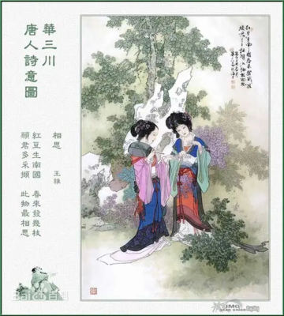

第一回 甄士隐梦幻识通灵 贾雨村风尘怀闺秀
正文
此开卷第一回也。作者自云：因曾历过一番梦幻之后，故将真事隐去，而借”通灵”之说，撰此《石头记》一书也。故曰”甄士隐”云云。但书中所记何事何人？自又云：”今风尘碌碌，一事无成，忽念及当日所有之女子，一一细考较去，觉其行止见识，皆出于我之上。何我堂堂须眉1，诚不若彼裙钗2哉？实愧则有馀，悔又无益之大无可如何3之日也！当此，则自欲将已往所赖天恩祖德，锦衣纨 4之时，饫甘餍肥5之日，背父兄教育之恩，负师友规训之德，以至今日一技无成、半生潦倒之罪，编述一集，以告天下人：我之罪固不免，然闺阁中本自历历有人，万不可因我之不肖，自护己短，一并使其泯灭也。虽今日之茅椽蓬牖6，瓦灶绳床7，其晨夕风露，阶柳庭花，亦未有妨我之襟怀笔墨者。虽我未学，下笔无文，又何妨用假语村言，敷演8出一段故事来，亦可使闺阁9昭传10，复可悦世之目，破人愁闷，不亦宜乎？”故曰”贾雨村”云云。
4之时，饫甘餍肥5之日，背父兄教育之恩，负师友规训之德，以至今日一技无成、半生潦倒之罪，编述一集，以告天下人：我之罪固不免，然闺阁中本自历历有人，万不可因我之不肖，自护己短，一并使其泯灭也。虽今日之茅椽蓬牖6，瓦灶绳床7，其晨夕风露，阶柳庭花，亦未有妨我之襟怀笔墨者。虽我未学，下笔无文，又何妨用假语村言，敷演8出一段故事来，亦可使闺阁9昭传10，复可悦世之目，破人愁闷，不亦宜乎？”故曰”贾雨村”云云。
此回中凡用”梦”用”幻”等字，是提醒阅者眼目，亦是此书立意本旨。11
列位看官：你道此书从何而来？说起根由虽近荒唐，细按则深有趣味。待在下将此来历注明，方使阅者了然不惑。
原来女娲氏炼石补天12之时，于大荒山无稽崖13炼成高经14十二丈、方经二十四丈顽石三万六千五百零一块。娲皇氏只用了三万六千五百块，只单单剩了一块未用，便弃在此山青埂峰下。谁知此石自经煅炼之后，灵性已通，因见众石俱得补天，独自己无材不堪入选，遂自怨自叹，日夜悲号惭愧。
一日，正当嗟悼15之际，俄16见一僧一道远远而来，生得骨格不凡，丰神迥异17，说说笑笑来至峰下，坐于石边高谈快论。先是说些云山雾海神仙玄幻之事，后便说到红尘中荣华富贵。此石听了，不觉打动凡心，也想要到人间去享一享这荣华富贵；但自恨粗蠢，不得已，便口吐人言，向那僧道说道：”大师，弟子蠢物，不能见礼了。适闻二位谈那人世间荣耀繁华，心切慕之。弟子质虽粗蠢，性却稍通；况见二师仙形道体，定非凡品，必有补天济世之材，利物济人之德。如蒙发一点慈心，携带弟子得入红尘，在那富贵场中、温柔乡里受享几年，自当永佩洪恩18，万劫不忘也。”二仙师听毕，齐憨笑道：”善哉，善哉！那红尘中有却有些乐事，但不能永远依恃；况又有’美中不足，好事多魔19‘八个字紧相连属20，瞬息间则又乐极悲生，人非物换，究竟是到头一梦，万境归空，倒不如不去的好。”
这石凡心已炽，那里听得进这话去，乃复苦求再四。二仙知不可强制，乃叹道：”此亦静极思动，无中生有之数也。既如此，我们便携你去受享受享，只是到不得意时，切莫后悔。”石道：”自然，自然。”那僧又道：”若说你性灵，却又如此质蠢，并更无奇贵之处。如此也只好踮脚21而已。也罢，我如今大施佛法助你助，待劫终之日，复还本质，以了此案。你道好否？”石头听了，感谢不尽。那僧便念咒书符，大展幻术，将一块大石登时变成22一块鲜明莹洁的美玉，且又缩成扇坠23大小的可佩可拿。那僧托于掌上，笑道：”形体倒也是个宝物了！还只没有实在的好处，须得再镌上数字，使人一见便知是奇物方妙。然后携你到那昌明隆盛之邦，诗礼簪缨之族24，花柳繁华地，温柔富贵乡去安身乐业。”石头听了，喜不能禁，乃问：”不知赐了弟子那几件奇处，又不知携了弟子到何地方？望乞明示，使弟子不惑。”那僧笑道：”你且莫问，日后自然明白的。”说着，便袖了这石，同那道人飘然而去，竟不知投奔何方何舍。
后来，又不知过了几世几劫25，因有个空空道人访道求仙，忽从这大荒山无稽崖青埂峰下经过，忽见一大块石上字迹分明，编述历历。空空道人乃从头一看，原来就是无材补天，幻形入世，蒙茫茫大士、渺渺真人携入红尘，历尽离合悲欢炎凉世态的一段故事。后面又有一首偈26云：
wú cái bǔ tiān tàn 《无材补天叹》 bǔ tiān shí qīng cáo xuě qín ——补天石（清·曹雪芹） wú cái kě qù bǔ cāng tiān ， wǎng rù hóng chén ruò xǔ nián 。 无材可去补苍天，枉入红尘若许27年。 cǐ xì shēn qián shēn hòu shì ， qìng shéi jì qù zuò qí zhuàn ？ 此系28身前身后事，倩谁29记去作奇传？
诗后便是此石坠落之乡，投胎之处，亲自经历的一段陈迹故事。其中家庭闺阁琐事，以及闲情诗词倒还全备，或可适趣解闷；然朝代年纪，地舆30邦国却反失落无考。
空空道人遂向石头说道：”石兄，你这一段故事，据你自己说有些趣味，故编写在此，意欲问世传奇。据我看来，第一件，无朝代年纪可考；第二件，并无大贤大忠理朝廷治风俗的善政，其中只不过几个异样女子，或情或痴，或小才微善，亦无班姑、蔡女之德能31。我纵抄去，恐世人不爱看呢。”石头笑答道：”我师何太痴耶！若云无朝代可考，今我师竟假借汉唐等年纪添缀，又有何难？但我想，历来野史32，皆蹈一辙，莫如我这不借此套者，反倒新奇别致，不过只取其事体情理罢了，又何必拘拘于朝代年纪哉！再者，市井俗人喜看理治之书33者甚少，爱适趣闲文者特多。历来野史，或讪谤34君相，或贬人妻女，奸淫凶恶，不可胜数。更有一种风月笔墨35，其淫秽污臭，屠毒笔墨，坏人子弟，又不可胜数36。至若佳人才子等书，则又千部共出一套，且其中终不能不涉于淫滥，以致满纸潘安、子建、西子、文君37，不过作者要写出自己的那两首情诗艳赋来，故假拟出男女二人名姓，又必旁出一小人其间拨乱，亦如剧中之小丑然。且鬟婢38开口即者也之乎，非文即理。故逐一看去，悉皆自相矛盾、大不近情理之话，竟不如我半世亲睹亲闻的这几个女子，虽不敢说强似前代书中所有之人，但事迹原委，亦可以消愁破闷；也有几首歪诗熟话，可以喷饭供酒。至若离合悲欢，兴衰际遇，则又追踪蹑迹，不敢稍加穿凿39，徒为供人之目而反失其真传40者。今之人，贫者日为衣食所累，富者又怀不足之心，纵一时稍闲，又有贪淫恋色、好货寻愁之事，那里去有工夫看那理治之书？所以我这一段故事，也不愿世人称奇道妙，也不定要世人喜悦检读41，只愿他们当那醉淫饱卧42之时，或避事43去愁之际，把此一玩，岂不省了些寿命筋力？就比那谋虚逐妄，却也省了口舌是非之害，腿脚奔忙之苦。再者，亦令世人换新眼目，不比那些胡牵乱扯忽离忽遇，满纸才人淑女、子建文君红娘小玉44等通共45熟套46之旧稿。我师意为何如？”
空空道人听如此说，思忖半晌，将《石头记》再检阅一遍，因见上面虽有些指奸责佞贬恶诛邪之语，亦非伤时骂世之旨；及至君仁臣良父慈子孝，凡伦常47所关之处，皆是称功颂德，眷眷48无穷，实非别书之可比。虽其中大旨谈情，亦不过实录其事，又非假拟妄称，一味淫邀艳约、私订偷盟之可比。因毫不干涉时世，方从头至尾抄录回来，问世传奇。从此空空道人49因空50见色，由色生情，传情入色，自色悟空，遂易名为情僧，改《石头记》为《情僧录》。东鲁51孔梅溪52则题曰《风月宝鉴》53。后因曹雪芹于悼红轩54中披阅十载，增删五次，纂成目录，分出章回，则题曰《金陵十二钗》55。并题一绝云：
huāng táng yán 《荒唐言》 qīng cáo xuě qín ——清·曹雪芹 mǎn zhǐ huāng táng yán ， yī bǎ xīn suān lèi 。 满纸荒唐言，一把辛酸泪。 dōu yún zuò zhě chī ， shéi jiě qí zhōng wèi ！ 都云作者痴，谁解其中味！
出则既明，且看石上是何故事。按那石上书云：
当日地陷东南56，这东南一隅有处曰姑苏，有城曰阊门57者，最是红尘中一二等富贵风流之地。这阊门外有个十里街，街内有个仁清巷58，巷内有个古庙，因地方窄狭，人皆呼作葫芦庙。庙旁住着一家乡宦，姓甄，名费，字士隐。嫡妻封氏，情性贤淑，深明礼义。家中虽不甚富贵，然本地便也推他为望族了。因这甄士隐禀性恬淡，不以功名为念，每日只以观花修竹、酌酒吟诗为乐，倒是神仙一流人品。只是一件不足：如今年已半百，膝下无儿，只有一女，乳名唤作英莲59，年方三岁。
一日，炎夏永昼，士隐于书房闲坐，至手倦抛书60，伏几少憩，不觉朦胧睡去。梦至一处，不辨是何地方。忽见那厢来了一僧一道，且行且谈。
只听道人问道：”你携了这蠢物，意欲何往？”那僧笑道：”你放心，如今现有一段风流公案正该了结，这一干风流冤家61，尚未投胎入世。趁此机会，就将此蠢物夹带于中，使他去经历经历。”那道人道：”原来近日风流冤孽又将造劫历世去不成？但不知落于何方何处？”那僧笑道：”此事说来好笑，竟是千古未闻的罕事。只因西方灵河岸上三生石62畔，有绛珠草一株，时有赤瑕宫神瑛侍者，日以甘露灌溉，这绛珠草63始得久延岁月。后来既受天地精华，复得雨露滋养，遂得脱却草胎木质，得换人形，仅修成个女体，终日游于离恨天外，饥则食蜜青果为膳，渴则饮灌愁海64水为汤。只因尚未酬报灌溉之德，故其五内65便郁结着一段缠绵不尽之意。恰近日这神瑛侍者凡心偶炽，乘此昌明太平朝世，意欲下凡造历幻缘，已在警幻仙子案前挂了号。警幻亦曾问及，灌溉之情未偿，趁此倒可了结的。那绛珠仙子道：’他是甘露之惠，我并无此水可还。他既下世为人，我也去下世为人，但把我一生所有的眼泪还他，也偿还得过他了。’因此一事，就勾出多少风流冤家来，陪他们去了结此案。”
那道人道：”果是罕闻。实未闻有还泪之说。想来这一段故事，比历来风月事故更加琐碎细腻了。”那僧道：”历来几个风流人物，不过传其大概以及诗词篇章而已；至家庭闺阁中一饮一食，总未述记。再者，大半风月故事，不过偷香窃玉、暗约私奔而已，并不曾将儿女之真情发泄一二。想这一干人入世，其情痴色鬼、贤愚不肖66者，悉与前人传述不同矣。”那道人道：”趁此何不你我也去下世度脱67几个，岂不是一场功德？”那僧道：”正合吾意。你且同我到警幻仙子宫中，将蠢物交割清楚，待这一干风流孽鬼下世已完，你我再去。如今虽已有一半落尘，然犹未全集。”道人道：”既如此，便随你去来。”
却说甄士隐俱听得明白，但不知所云”蠢物”系何东西。遂不禁上前施礼，笑问道：”二仙师请了。”那僧道也忙答礼相问。士隐因说道：”适闻仙师所谈因果，实人世罕闻者。但弟子愚浊，不能洞悉明白，若蒙大开痴顽，备细一闻，弟子则洗耳谛听，稍能警省，亦可免沉沦68之苦。”二仙笑道：”此乃玄机69不可预泄者。到那时不要忘我二人，便可跳出火坑70矣。”士隐听了，不便再问。因笑道：”玄机不可预泄，但适云’蠢物’，不知为何，或可一见否？”那僧道：”若问此物，倒有一面之缘。”说着，取出递与士隐。
士隐接了看时，原来是块鲜明美玉，上面字迹分明，镌着”通灵宝玉”四字，后面还有几行小字。正欲细看时，那僧便说已到幻境，便强从手中夺了去，与道人竟过一大石牌坊，上书四个大字，乃是”太虚幻境”71。两边又有一副对联，道是：
假作真时真亦假，无为有处有还无72。
士隐意欲也跟了过去，方举步时，忽听一声霹雳，有若山崩地陷。士隐大叫一声，定睛一看，只见烈日炎炎，芭蕉冉冉73，所梦之事便忘了大半。又见奶母正抱了英莲走来。士隐见女儿越发生得粉妆玉琢，乖觉74可喜，便伸手接来，抱在怀内，逗他顽耍一回，又带至街前，看那过会75的热闹。
方欲进来时，只见从那边来了一僧一道：那僧则癞头跣脚76，那道则跛足蓬头，疯疯癫癫，挥霍77谈笑而至。及至到了他门前，看见士隐抱着英莲，那僧便大哭起来，又向士隐道：”施主，你把这有命无运78、累及爹娘之物，抱在怀内作甚？”士隐听了，知是疯话，也不去睬他。那僧还说：”舍79我罢，舍我罢！”士隐不耐烦，便抱女儿撤身要进去，那僧乃指着他大笑，口内念了四句言词道：
jǐng yuán xiāo 《警元宵》 máng máng dà shì qīng cáo xuě qín ——茫茫大士（清·曹雪芹） guàn yǎng jiāo shēng xiào nǐ chī ， líng huā kōng duì xuě sī sī 。 惯养娇生笑你痴，菱花空对雪澌澌80。 hǎo fáng jiā jié yuán xiāo hòu ， biàn shì yān xiāo huǒ miè shí 。 好防佳节元宵后，便是烟消火灭时。
士隐听得明白，心下犹豫，意欲问他们来历。只听道人说道：”你我不必同行，就此分手，各干营生去罢。三劫后，我在北邙山81等你，会齐了同往太虚幻境销号。”那僧道：”最妙，最妙！”说毕，二人一去，再不见个踪影了。士隐心中此时自忖：这两个人必有来历，该试一问，如今悔却晚也。
这士隐正痴想，忽见隔壁葫芦庙内寄居的一个穷儒——姓贾名化、字表82时飞、别号雨村者走了出来。这贾雨村原系湖州8384人氏，也是诗书仕宦之族，因他生于末世，父母祖宗根基已尽，人口衰丧，只剩得他一身一口，在家乡无益，因进京求取功名，再整基业。自前岁来此，又淹蹇85住了，暂寄庙中安身，每日卖字作文为生，故士隐常与他交接。
当下雨村见了士隐，忙施礼陪笑道：”老先生倚门伫望，敢86街市上有甚新闻否？”士隐笑道：”非也。适因小女啼哭，引他出来作耍，正是无聊之甚，兄来得正妙，请入小斋一谈，彼此皆可消此永昼。”说着，便令人送女儿进去，自与雨村携手来至书房中。小童献茶。方谈得三五句话，忽家人飞报：”严老爷来拜。”士隐慌的忙起身谢罪道：”恕诳驾87之罪，略坐，弟即来陪。”雨村忙起身亦让道：”老先生请便。晚生乃常造之客，稍候何妨。”说着，士隐已出前厅去了。
这里雨村且翻弄书籍解闷。忽听得窗外有女子嗽声，雨村遂起身往窗外一看，原来是一个丫鬟，在那里撷88花，生得仪容不俗，眉目清明，虽无十分姿色，却亦有动人之处。雨村不觉看的呆了。
那甄家丫鬟撷了花，方欲走时，猛抬头见窗内有人，敝巾旧服，虽是贫窘，然生得腰圆背厚，面阔口方，更兼剑眉星眼，直鼻权腮89。这丫鬟忙转身回避，心下乃想：”这人生的这样雄壮，却又这样褴褛，想他定是我家主人常说的什么贾雨村了，每有意帮助周济，只是没甚机会。我家并无这样贫窘亲友，想定是此人无疑了。怪道又说他必非久困之人。”如此想来，不免又回头两次。
雨村见他回了头，便自为这女子心中有意于他，便狂喜不尽，自为此女子必是个巨眼英雄90，风尘91中之知己也。一时小童进来，雨村打听得前面留饭，不可久待，遂从夹道中自便出门去了。士隐待客既散，知雨村自便，也不去再邀。
一日，早又中秋佳节。士隐家宴已毕，乃又另具一席于书房，却自己步月至庙中来邀雨村。原来雨村自那日见了甄家之婢曾回顾他两次，自为是个知己，便时刻放在心上。今又正值中秋，不免对月有怀，因而口占五言一律92云：
xiāng sī chóu 《相思愁》 jiǎ yǔ cūn qīng cáo xuě qín ——贾雨村（清·曹雪芹） wèi bǔ sān shēng yuàn ， pín tiān yī duàn chóu 。 未卜三生愿93，频添一段愁94。 mèn lái shí liǎn é ， xíng qù jǐ huí tóu 。 闷来时敛额95，行去96几回头。 zì gù fēng qián yǐng ， shéi kān yuè xià chóu ？ 自顾风前影，谁堪月下俦97？ chán guāng rú yǒu yì ， xiān shàng yù rén lóu 。 蟾光如有意，先上玉人楼98。
雨村吟罢，因又思及平生抱负，苦未逢时，乃又搔首对天长叹，复高吟一联曰：
玉在中求善价，钗于奁内待时飞。99
恰值士隐走来听见，笑道：”雨村兄真抱负不浅也！”雨村忙笑道：”不过偶吟前人之句，何敢狂诞至此。”因问：”老先生何兴至此？”士隐笑道：”今夜中秋，俗谓’团圆之节’，想尊兄旅寄僧房，不无寂寥之感，故特具小酌，邀兄到敝斋一饮，不知可纳芹意100否？”雨村听了，并不推辞，便笑道：”既蒙厚爱，何敢拂此盛情。”说着，便同士隐复过这边书院中来。
须臾茶毕，早已设下杯盘，那美酒佳肴自不必说。二人归坐，先是款斟漫饮101，次渐谈至兴浓，不觉飞觥限斝102起来。
当时街坊上家家箫管，户户弦歌，当头一轮明月，飞彩凝辉，二人愈添豪兴，酒到杯干。雨村此时已有七八分酒意，狂兴不禁，乃对月寓怀，口号103一绝云：
zhōng qiū yuè sòng 《中秋月颂》 jiǎ yǔ cūn qīng cáo xuě qín ——贾雨村（清·曹雪芹） shí féng sān wǔ biàn tuán yuán ， mǎn bǎ qíng guāng hù yù lán 。 时逢三五104便团圆，满把晴光护玉栏105。 tiān shàng yì lún cái pěng chū ， rén jiān wàn xìng yǎng tóu kàn 。 天上一轮才捧出，人间万姓仰头看。
士隐听了，大叫：”妙哉！吾每谓兄必非久居人下者，今所吟之句，飞腾之兆已见，不日可接履于云霓之上106矣。可贺，可贺！”乃亲斟一斗为贺。雨村因干过，叹道：”非晚生酒后狂言，若论时尚之学107，晚生也或可去充数沽名，只是目今行囊路费一概无措，神京108路远，非赖卖字撰文即能到者。”士隐不待说完，便道：”兄何不早言。愚每有此心，但每遇兄时，兄并未谈及，愚故未敢唐突。今既及此，愚虽不才，’义利’二字109却还识得。且喜明岁正当大比，兄宜作速入都，春闱110一战，方不负兄之所学也。其盘费馀事，弟自代为处置，亦不枉兄之谬识矣！”当下即命小童进去，速封五十两白银，并两套冬衣。又云：”十九日乃黄道之期，兄可即买舟西上，待雄飞高举，明冬再晤，岂非大快之事耶！”雨村收了银衣，不过略谢一语，并不介意，仍是吃酒谈笑。那天已交了三更，二人方散。
士隐送雨村去后，回房一觉，直至红日三竿方醒。因思昨夜之事，意欲再写两封荐书与雨村带至神都，使雨村投谒个仕宦之家为寄足之地。因使人过去请时，那家人去了回来说：”和尚说，贾爷今日五鼓已进京去了，也曾留下话与和尚转达老爷，说’读书人不在黄道黑道111，总以事理为要，不及面辞了。’“士隐听了，也只得罢了。
真是闲处光阴易过，倏忽又是元宵佳节矣。士隐命家人霍启抱了英莲去看社火花灯112，半夜中，霍启因要小解，便将英莲放在一家门槛上坐着。待他小解完了来抱时，那有英莲的踪影？急得霍启直寻了半夜，至天明不见，那霍启也就不敢回来见主人，便逃往他乡去了。那士隐夫妇，见女儿一夜不归，便知有些不妥，再使几人去寻找，回来皆云连音响皆无。夫妻二人，半世只生此女，一旦失落，岂不思想，因此昼夜啼哭，几乎不曾寻死。看看的一月，士隐先就得了一病；当时封氏孺人113也因思女构疾，日日请医疗治。
不想这日三月十五，葫芦庙中炸供114，那些和尚不加小心，致使油锅火逸，便烧着窗纸。此方人家多用竹篱木壁者，大抵也因劫数，于是接二连三，牵五挂四，将一条街烧得如火焰山一般。彼时虽有军民来救，那火已成了势，如何救得下？直烧了一夜，方渐渐的熄去，也不知烧了几家。只可怜甄家在隔壁，早已烧成一片瓦砾场了。只有他夫妇并几个家人的性命不曾伤了。急得士隐惟跌足长叹而已。只得与妻子商议，且到田庄上去安身。偏值近年水旱不收，鼠盗蜂起，无非抢田夺地，鼠窃狗偷，民不安生，因此官兵剿捕，难以安身。士隐只得将田庄都折变了，便携了妻子与两个丫鬟投他岳丈家去。
他岳丈名唤封肃，本贯大如州人氏，虽是务农，家中都还殷实。今见女婿这等狼狈而来，心中便有些不乐。幸而士隐还有折变田地的银子未曾用完，拿出来托他随分就价薄置些须房地，为后日衣食之计。那封肃便半哄半赚，些须与他些薄田朽屋。士隐乃读书之人，不惯生理稼穑115等事，勉强支持了一二年，越觉穷了下去。封肃每见面时，便说些现成话，且人前人后又怨他们不善过活，只一味好吃懒作等语。士隐知投人不着116，心中未免悔恨，再兼上年惊唬，急忿怨痛，已有积伤，暮年之人，贫病交攻，竟渐渐的露出那下世的光景来117。
可巧这日拄了拐杖挣挫118到街前散散心时，忽见那边来了一个跛足道人，疯癫落脱119，麻屣鹑衣120，口内念着几句言词，道是：
hǎo le gē 《好了歌》 miǎo miǎo zhēn rén qīng cáo xuě qín ——渺渺真人（清·曹雪芹） shì rén dōu xiǎo shén xiān hǎo ， wéi yǒu gōng míng wàng bù liǎo ！ 世人都晓神仙好，惟有功名忘不了121！ gǔ jīn jiàng xiàng zài hé fāng ？huāng zhǒng yì duī cǎo mò le 。 古今将相在何方？荒冢一堆草没了122。 shì rén dōu xiǎo shén xiān hǎo ， zhǐ yǒu jīn yín wàng bù liǎo ！ 世人都晓神仙好，只有金银忘不了！ zhōng cháo zhǐ hèn jù wú duō ， jí dào duō shí yǎn bì le 。 终朝只恨聚无多，及到多时眼闭了。 shì rén dōu xiǎo shén xiān hǎo ， zhǐ yǒu jiāo qī wàng bù liǎo ！ 世人都晓神仙好，只有姣妻忘不了！ jūn shēng rì rì shuō ēn qíng ， jūn sǐ yòu suí rén qù le 。 君生日日说恩情，君死又随人去了。 shì rén dōu xiǎo shén xiān hǎo ， zhǐ yǒu ér sūn wàng bù liǎo ！ 世人都晓神仙好，只有儿孙忘不了！ chī xīn fù mǔ gǔ lái duō ， xiào shùn ér sūn shéi jiàn le ？ 痴心父母古来多，孝顺儿孙谁见了？
士隐听了，便迎上来道：”你满口说些什么？只听见些’好’‘了’‘好’‘了’。”那道人笑道：”你若果听见’好’‘了’二字，还算你明白。可知世上万般，好便是了，了便是好。若不了，便不好；若要好，须是了。我这歌儿，便名《好了歌》。”士隐本是有宿慧123的，一闻此言，心中早已彻悟124。因笑道：”且住！待我将你这《好了歌》解注出来何如？”道人笑道：”你解，你解。”士隐乃说道：
shì shì wú cháng 《世事无常》 zhēn shì yǐn qīng cáo xuě qín ——甄士隐（清·曹雪芹） lòu shì kōng táng ， dāng nián hù mǎn chuáng ； 陋室空堂，当年笏满床125； shuāi cǎo kū yáng ， céng wèi gē wǔ chǎng 。 衰草枯杨，曾为歌舞场。 zhū sī ér jié mǎn diāo liáng ， lǜ shā jīn yòu hú zài péng chuāng shàng 。 蛛丝儿结满雕梁，绿纱今又糊在蓬窗上。 shuō shén me zhī zhèng nóng fěn zhèng xiāng ， rú hé liǎng bìn yòu chéng shuāng ？ 说什么脂正浓、粉正香，如何两鬓又成霜？ zuó rì huáng tǔ lǒng tóu sòng bái gǔ ， jīn xiāo hóng dēng zhàng dǐ wò yuān yāng 。 昨日黄土陇头126送白骨，今宵红灯帐底卧鸳鸯。 jīn mǎn xiāng ， yín mǎn xiāng ， zhǎn yǎn qǐ gài rén jiē bàng 。 金满箱，银满箱，展眼乞丐人皆谤。 zhèng tàn tā rén mìng bù zhǎng ， nà zhī zì jǐ guī lái sàng ！ 正叹他人命不长，那知自己归来丧！ xùn yǒu fāng ， bǎo bù dìng rì hòu zuò qiáng liáng 。 训有方，保不定日后作强梁127。 zé gāo liáng ， shuí chéng wàng liú luò zài yān huā xiàng ！ 择膏粱128，谁承望流落在烟花巷129！ yīn xián shā mào xiǎo ， zhì shǐ suǒ jiā káng ； 因嫌纱帽小，致使锁枷扛； zuó lián pò ǎo hán ， jīn xián zǐ mǎng zhǎng 。 昨怜破袄寒，今嫌紫蟒130长。 luàn hōng hōng nǐ fāng chàng bà wǒ dēng chǎng ， fǎn rèn tā xiāng shì gù xiāng 。 乱烘烘你方唱罢我登场，反认他乡是故乡131。 shèn huāng táng ， dào tóu lái dōu shì wèi tā rén zuò jià yī shang ！ 甚荒唐，到头来都是为他人作嫁衣裳132！
那疯跛道人听了，拍掌笑道：”解得切，解得切！”士隐便说一声”走罢！”将道人肩上褡裢133抢了过来背着，竟不回家，同了疯道人飘飘而去。当下烘动街坊，众人当作一件新闻传说。封氏闻得此信，哭个死去活来，只得与父亲商议，遣人各处访寻，那讨音信？无奈何，少不得依靠着他父母度日。幸而身边还有两个旧日的丫鬟服侍，主仆三人，日夜作些针线发卖，帮着父亲用度。那封肃虽然日日抱怨，也无可奈何了。
这日，那甄家大丫鬟在门前买线，忽听街上喝道之声，众人都说新太爷到任。丫鬟于是隐在门内看时，只见军牢快手134，一对一对的过去，俄而大轿抬着一个乌帽猩135袍的官府过去。丫鬟倒发了个怔，自思这官好面善，倒像在那里见过的。于是进入房中，也就丢过不在心上。至晚间，正待歇息之时，忽听一片声打的门响，许多人乱嚷，说：”本府太爷差人来传人问话。”封肃听了，唬得目瞪口呆，不知有何祸事，且听下回分解。136
相关引证诗词
xià rì dēng chē gài tíng 《夏日登车盖亭》 běi sòng cài què ——北宋·蔡确 zhǐ píng shí zhěn zhú fāng chuáng ， shǒu juàn pāo shū wǔ mèng zhǎng 。 纸屏石枕竹方床137，手倦抛书午梦长。 shuì qǐ guǎn rán chéng dú xiào ， shù shēng yú dí zài cāng láng 。 睡起莞然成独笑138，数声渔笛在沧浪139。
简介
《夏日登车盖亭140》是北宋诗人蔡确141创作的的一首七言绝句。诗中描写作者被贬安州官冷身闲，得以放情山水的逸兴，并化用《楚辞·渔父》句意，隐约地表达了对现实的不满和对隐遁生活的向往，闲静的基调中含沉郁之致，委婉深切。
译文
纸围屏风石作枕头，卧在竹床多么清凉，久举书卷手已疲累，抛书一旁渐入悠长梦乡。 醒来后不觉独自微笑，把世事细细思量，忽听几声清亮的渔笛回旋在沧浪水上。
创作背景
蔡确积极支持王安石变法，元丰五年（1082年），拜尚书右仆射兼中书侍郎（右丞相）。神宗死，哲宗继位。元祐元年（1086年），罢知陈州142。元祐二年（1087年）因为“军器监之狱143”受其弟蔡硕牵连，被贬知安州144（湖北安陆），夏日登车盖亭，作了十首诗，此其第二首。《尧山堂外记》载：“时吴处厚145笺注146以闻，其略云：五篇涉讥讽。‘何处机心惊白马，谁人怒剑逐青蝇’——以讥谗谮之人；‘叶底出巢黄口闹，波间逐队小鱼忙’——讥新进用事之臣；‘睡起莞然成独笑’——方今朝廷清明，不知确笑何事。”
赏析
这首诗，着意刻画了作者贬官后的闲散之态和对隐居生活的向往。“纸屏石枕竹方床，手倦抛书午梦长。”这两句说：游亭之后，便躺在纸屏遮挡的石枕、竹方床上，看了一会儿陶渊明的诗（“卧展柴桑处士诗”），感到有些倦怠，便随手抛书，美美地睡了一觉。诗人是“夏日登车盖亭”的，因而，读了“纸屏、石枕、方竹床”，写得气清意爽；读了“手倦抛书、午梦长”，表现了诗人闲散之态；并且从“午梦长”中，还透出一点半隐半露的消息，这要联系下文来理解。
“睡觉莞然成独笑”，梦醒之后，诗人“莞然独笑”，是在“午梦长”中有所妙悟，从而领略到人生如梦，富贵如云烟。。诗人所读的书，是“柴桑处士诗”；诗人所作的梦，也是耕樵处士之梦；梦中是处士，醒来是谪官，他想想昔为布衣平民（“持正年二十许岁时，家苦贫，衣服稍敝。”事见《懒真子》），鸿运一来，金榜题名，仕途廿载，官至丞相，后来天翻地覆，谪居此地，如同大梦一场。由此，他想到了归隐；想到归隐，马上便有隐者的呼唤——“数声渔笛在沧浪”。而听到了“数声渔笛”，他的归隐之情就表现得更加强烈了。
唐代诗人王维写过一首《酬张少府》：“晚年唯好静，万事不关心。自顾无长策，空知返旧林。松风吹解带，山月照弹琴。君问穷通理，渔歌入浦深。”这首诗一方面明示作者“万事不关心”，一方面又描摹了他聆听“渔歌入浦深”的情状，所以归隐的题旨比较明显。而蔡确这首诗，却仅以“莞然独笑”、“数声渔笛”揭示主旨，这就比王维之诗更形委婉；更具韵外之致和味外之旨。《楚辞·渔父》：“渔父莞尔而笑，鼓枻而去，乃歌曰：‘沧浪之水清兮，可以濯吾缨，沧浪之水浊兮，可以濯吾足’，遂去，不复与言。”王逸《楚辞章句》注：“水清，喻世昭明，沐浴，升朝廷也；水浊，喻世昏暗，宜隐遁也。”描写闲散生活，委婉抒发归隐之志，便是这首诗的主旨。
xiāng sī 《相思》 táng wáng wéi ——唐·王维 hóng dòu shēng nán guó ， chūn lái fā jǐ zhī ？ 红豆生南国，春来发几枝？ yuàn jūn duō cǎi xié ， cǐ wù zuì xiāng sī 。 愿君多采撷，此物最相思。
简介
《相思》是唐代诗人王维的诗作。此诗借咏物而寄相思，全篇不离红豆，正用其相思子之名以关合相思之情。首句写红豆产地；次句以“发几枝”一问，语极朴实，而又极富形象性，设问自然，则暗逗情怀；三句寄意友人“多采撷”，言在此而意在彼；末句点明其相思属性，且用一“最”字推达极致，则“多采撷”的理由自见，而自身所寄之意亦深含其中。全诗风格明快，却又委婉含蓄，语浅而情深，相传当时即为人谱曲传唱，流行江南。
译文
红豆生长在南国的土地上，每逢春天不知长多少新枝。
希望你能尽情地摘取采集，因为这红豆最能寄托相思。
创作背景
此诗一作《江上赠李龟年》，可见为怀念友人之作。据载，天宝末年安史之乱时，李龟年流落江南曾演唱此诗，可证此诗为天宝年间所作。
赏析

这首借咏物而寄相思的诗，起句因物起兴，语虽单纯，却富于想象；接着以设问寄语，意味深长地寄托情思；第三句暗示珍重友谊，表面似乎嘱人相思，背面却深寓自身相思之重；最后一语双关，既切中题意，又关合情思，妙笔生花，婉曲动人。全诗情调健美高雅，怀思饱满奔放，语言朴素无华，韵律和谐柔美。可谓绝句的上乘佳品。
红豆产于南方，结实鲜红浑圆，晶莹如珊瑚，南方人常用以镶嵌饰物。传说古代有一位女子，因丈夫死在边地，哭于树下而死，化为红豆，于是人们又称呼它为“相思子”。唐诗中常用它来关合相思之情。而“相思”不限于男女情爱范围，朋友之间也有相思的，如苏李147诗“行人难久留，各言长相思”即著例。此诗题一作《江上赠李龟年》，可见诗中抒写的是眷念朋友的情绪。
“南国”（南方）既是红豆产地，又是朋友所在之地。首句以“红豆生南国”起兴，暗逗后文的相思之情。语极单纯，而又富于形象。次句“春来发几枝”轻声一问，承得自然，寄语设问的口吻显得分外亲切。然而单问红豆春来发几枝，是意味深长的，这是选择富于情味的事物来寄托情思。“来日绮窗前，寒梅著花未？”（王维《杂诗》）对于梅树的记忆，反映出了客子深厚的乡情。同样，这里的红豆是赤诚友爱的一种象征。这样写来，便觉语近情遥，令人神远。第三句紧接着寄意对方“多采撷”红豆，仍是言在此而意在彼。以采撷植物来寄托怀思的情绪，是古典诗歌中常见手法，如汉代古诗：“涉江采芙蓉，兰泽多芳草，采之欲遗谁？所思在远道”即著例。“愿君多采撷”似乎是说：“看见红豆，想起我的一切吧。”暗示远方的友人珍重友谊，语言恳挚动人。这里只用相思嘱人，而自己的相思则见于言外。用这种方式透露情怀，婉曲动人，语意高妙。宋人洪迈编《万首唐人绝句》，此句“多”字作“休”。用“休”字反衬离情之苦，因相思转怕相思，当然也是某种境况下的人情状态。用“多”字则表现了一种热情饱满、一往情深的健美情调。此诗情高意真而不伤纤巧，与“多”字关系甚大，故“多”字比“休”字更好。末句点题，“相思”与首句“红豆”呼应，既是切“相思子”之名，又关合相思之情，有双关的妙用。“此物最相思”就像说：只有这红豆才最惹人喜爱，最叫人忘不了呢。这是补充解释何以“愿君多采撷”的理由。而读者从话中可以体味到更多的东西。诗人真正不能忘怀的，不言自明。一个“最”的高级副词，意味极深长，更增加了双关语中的含蕴。
全诗洋溢着少年的热情，青春的气息，满腹情思始终未曾直接表白，句句话儿不离红豆，而又“超以象外，得其圜中”，把相思之情表达得入木三分。它“一气呵成，亦须一气读下”，极为明快，却又委婉含蓄。在生活中，最情深的话往往朴素无华，自然入妙。王维很善于提炼这种素朴而典型的语言来表达深厚的思想感情。所以此诗语浅情深，当时就成为流行名歌是毫不奇怪的。
解释下面的脚注：
解释下面的脚注：
解释下面的脚注：
解释下面的脚注：
解释下面的脚注：
解释下面的脚注：
解释下面的脚注：
解释下面的脚注：
解释下面的脚注：
解释下面的脚注：
解释下面的脚注：
-
须眉——代指男子。 ↩
-
裙钗——代指女子。 ↩
-
无可如何：没有办法，无可奈何。 ↩
-
锦衣纨（wán丸）
——即“锦衣纨绔”：富贵者的穿着，引申为富家子弟的代称。锦：色彩华美的丝织物。纨：细绢。绔：套裤。 ↩ -
饫（yù玉）甘餍（yàn厌）肥——犹言饱食香甜肥美的食品。饫、餍，吃饱吃腻的意思。 ↩
-
茅椽（chuán传）蓬牖（yǒu友）——代指草房陋室，贫者所居。茅、蓬都是野草。椽，房椽子；牖，窗户。 ↩
-
瓦灶绳床——瓦灶为土坯烧成的简陋的灶，俗称行灶。绳床亦名胡床、交床，为一种简易的坐具。《演繁露》：”今之交床，本自虏来，始名胡床……唐穆宗时又名绳床。” ↩
-
敷演——叙述生发。 ↩
-
闺阁：女子的内室，也借指女子。 ↩
-
昭传：显著地流传、传播。 ↩
-
“此开卷第一回也”以下一大段文字，唯甲戌本在第一回回目之前，作为全书”凡例”的第五条，文字与各本少异，并另有回前诗。底本和其馀各本，都在回目之后，作为正文的开头。陈毓罴最早提出：这是脂批。正文应是从”列位看官”开始。从这段文字的内容和行文的特点看，这个结论是可信的。但考虑到其内容主要是”作者自云”，而在各本中又起着相当于楔子的作用，故仍作特殊处理，放在卷首，并在排字时低二格，以示区别。 ↩
-
女娲（wā洼）氏炼石补天——古代神话传说。女娲氏：传说中的上古”三皇”之一，又称娲皇。《淮南子·览冥训》：”往古之时，四极废，九州裂，天不兼覆，地不周载，……于是女娲炼五色石以补苍天，断鳌足以立四极。” ↩
-
大荒山无稽崖——大荒山：《山海经·大荒西经》：”大荒之中有山名曰大荒之山。”这里寓”荒唐”。无稽崖和后文”青埂峰”，均属作者虚拟，分别寓”无稽”、”情根”之意。《红楼梦》一书用人名地名谐音寓意，如后文由脂砚斋注明的有：甄士隐（真事隐），贾雨村（假语存），甄英莲（真应怜），霍启（祸起），封肃（风俗），娇杏（侥幸），冯渊（逢冤），元、迎、探、惜（原应叹息）等等，不再一一作注。 ↩
-
经：这里指石头的高度和宽度尺寸。 ↩
-
嗟悼：叹息哀伤。 ↩
-
俄：不久，一会儿。 ↩
-
丰神迥异：风采神态完全不同。 ↩
-
永佩洪恩：永远感怀、铭记大恩。 ↩
-
好事多魔：好事多磨，指好事情在实现、成功前，常常会遇到许多波折。 ↩
-
连属：连接、连续。 ↩
-
踮脚——犹言”垫脚”。 ↩
-
“说说笑笑”至”登时变成”共四百二十九字，原作”来至石下，席地而坐长谈，见”十一字，各本同。从甲戌本增。 ↩
-
扇坠——悬于扇柄的饰物，多用玉、石等制成。 ↩
-
诗礼簪（zān）缨之族——指书香门第，官宦家族。诗礼：读诗书，讲礼仪。簪缨：贵者的冠饰，这里代指作官。簪：一种横插髻上或连接冠与髻的长针。缨：帽带。 ↩
-
劫——佛家用语。梵文音译”劫波”之略，意为”远大时节”。佛教认为，世界有周期性的生灭过程，它经历若干万年后，就要毁灭一次，重新开始，此一周期称为一”劫”。 ↩
-
偈（jì记）——梵文音译”偈陀”或”伽陀”之略，意译为颂。一般为四句之韵文。 ↩
-
若许：若干、这么多。 ↩
-
系：是。 ↩
-
倩谁——倩：一读qìnɡ音庆，作动词，意为请。又读qiàn音欠，如倩影。倩谁，即请谁。 ↩
-
地舆：地理，指地域、疆土。 ↩
-
班姑、蔡女之德能——班姑：即班昭，东汉史学家班固之妹，博学，曾参与续《汉书》。和帝时担任过宫廷教师，号称”大家（ɡū）”，故称”班姑”。编有《女诫》七篇，历来奉为妇德的典范。见《后汉书·曹世叔妻传》。蔡女：指蔡文姬，名琰，东汉文学家蔡邕之女，博学多才，精通音律，是历史上有名的”才女”。见《后汉书·董祀妻传》。 ↩
-
野史——一般是指与官修正史相对而言的私家编撰的史类著作。”野史”之名始见于《新唐书·艺文志》，后渐与小说家言的”稗官”连用，称”稗官野史”。这里即指小说。 ↩
-
理治之书——泛指古代”理朝廷治风俗”的书籍。 ↩
-
讪谤：诽谤。 ↩
-
风月笔墨——原指描写风花雪月、儿女私情的文字。这里专指着意渲染色情的作品。 ↩
-
“更有一种”至”又不可胜数”二十六字，原无。梦稿、甲戌、蒙府、戚序、俄藏、卞藏、甲辰本均存，文字小异。从梦稿、甲戌本补。 ↩
-
潘安、子建、西子、文君——这里代指才子佳人。潘安：即潘安仁，晋代文人，著名美男子。子建：曹植的字，三国时文学家，以才高著称。西子：即西施，春秋时越国美女。文君：汉代卓王孙的女儿，新寡后”私奔”文学家司马相如，结为夫妇。 ↩
-
鬟婢：丫鬟婢女。 ↩
-
穿凿：牵强附会，生拉硬扯地解释。 ↩
-
徒为供人之目而反失其真传：只是为了供人观看却反而失去了真正的传述内容。 ↩
-
检读：阅读。 ↩
-
“醉淫饱卧”，底本、梦稿、俄藏、卞藏本同。蒙府、戚序本作”醉饱淫卧”，甲戌本作”醉馀饱卧”，甲辰本作”醉心饱卧”，舒序本作”醉酒饱卧”。 ↩
-
“避事”，梦稿、甲辰、舒序、俄藏、卞藏本同。甲戌、蒙府、戚序本作”避世”。 ↩
-
红娘、小玉——红娘：唐代元稹《会真记》（至元代王实甫衍为杂剧《西厢记》）中崔莺莺的丫鬟。小玉：唐代蒋防《霍小玉传》中的女主人公。 ↩
-
通共：总共。 ↩
-
熟套：老套，常见的套路。 ↩
-
伦常——即封建伦理道德。伦：人伦，封建社会指人与人之间关系及行为的准则。封建社会以君臣、父子、夫妇、兄弟、朋友为五伦，认为是不可改变的常道，亦称五常。 ↩
-
眷眷：依恋不舍的样子。 ↩
-
“从此空空道人”，原无，各脂本均同。从程甲本补。 ↩
-
空——“空”与下文的”色”、”情”，均佛教用语。佛教认为”空”乃天地万物的本体，一切终属空虚。”色”乃万物本体（空）的瞬息生灭的假象；”情”乃对此等假象（色）所产生的种种感情，如爱、憎等等。这里是借用，已注入了作家的人生体验。 ↩
-
东鲁：古地区名，春秋鲁国，在今山东省南部。此处可能只是一个虚拟的地名代称。 ↩
-
孔梅溪：具体人物不详，在《红楼梦》的成书过程中可能是参与过题名等活动的人。 ↩
-
《风月宝鉴》——甲戌本眉批云：”雪芹旧有《风月宝鉴》之书，乃其弟棠村序也。”甲戌本”凡例”云：《红楼梦》”又曰《风月宝鉴》，是戒妄动风月之情”。风月：指男女之情。宝鉴：宝镜。 ↩
-
悼红轩：曹雪芹著书之处，“悼红”有哀悼红颜之意，反映了《红楼梦》以众多女子命运为主题的特点。 ↩
-
金陵十二钗——金陵，古邑名，楚威王七年（公元前333年）置，在今南京市。后即为南京市的别称。钗：本为妇女的头饰。旧称女子为”裙钗”或”金钗”。十二钗，语本《古乐府》：”头上金钗十二行”，原言髻高插钗之多。又作十二女子代称。此书又”题曰《金陵十二钗》”，通常认为是由第五回”册子”上所写的十二个女子得名。 ↩
-
地陷东南——东南大地塌陷下沉。古代神话：共工与颛顼（zhuān xū专须）争帝，怒而触不周山，折天柱，绝地维，天倾西北，地不满东南。见《淮南子·天文训》。 ↩
-
姑苏、阊（chānɡ昌）门——姑苏：苏州的别称，因其西南有姑苏山而得名。这里是指旧苏州府辖境。阊门：苏州城的西北门，又名破楚门。这里代指苏州城。 ↩
-
十里街、仁清巷——据脂批，谐音”势利街”、”人情巷”。 ↩
-
“英莲”，原作”英菊”，己卯本同。从梦稿、甲戌、蒙府、戚序、甲辰、舒序、俄藏、卞藏本改。下此名重出时，各本情况大体相同，不再作校记。 ↩
-
手倦抛书——见北宋人蔡确《夏日登车盖亭》诗（收入《千家诗》）其前二句：”纸屏石枕竹方床，手倦抛书午梦长。” ↩
-
风流冤家——“冤家”，原为佛教用语。《五灯会元》：”佛教慈悲，冤亲平等。”后既作”仇人”、”对头”解，也用作对所爱之人的昵称，即爱极的反语。”风流冤家”指极相爱恋之男女。 ↩
-
西方灵河岸上三生石——西方灵河岸上：作者假想的神仙境界。西方：原指佛教的发源地天竺（古代印度）。灵河：原指恒河，今印度人犹称之为”圣水”。三生：指前生、今生和来生，这是佛教转世投胎的说法。三生石：传说唐代李源与和尚圆观交情很好，后有”三生石上旧精魂”、”此身虽异性常存”之句。见唐代袁郊《甘泽谣·圆观》。后以”三生石”喻因缘前定。 ↩
-
绛珠草：《红楼梦》中具有特殊寓意的仙草，林黛玉的前身。绛珠草受神瑛侍者（贾宝玉前身）以甘露灌溉之恩，为还泪而下世为人。 ↩
-
离恨天、蜜青果、灌愁海——离恨天：俗传”三十三天，离恨天最高；四百四十病，相思病最苦。”蜜青谐”秘情”。灌愁海：喻愁深。皆寓男女之情及其怨恨愁苦。 ↩
-
五内——五脏，即心、肝、脾、肺、肾。亦泛言内心深处。 ↩
-
不肖——旧时称不能继承父业之子曰不肖。肖：像。 ↩
-
度脱——佛家用语。超度解脱。 ↩
-
警省（xǐnɡ醒）、沉沦——均佛家用语。警省：警觉省悟。沉沦：指在生死轮回中永远不得解脱。 ↩
-
玄机——道家用语。谓玄奥微妙的道理。这里义同天机。 ↩
-
火坑——佛家用语，指苦难的人世。 ↩
-
太虚幻境——作者虚拟的仙境。太虚：空幻虚无的意思。 ↩
-
对联，原作”假作真时真作假，无为有处有为无”。己卯、梦稿本上联同底本。舒本略为特殊，作”色色空空地，真真假假天”。馀各本均作”假作真时真亦假，无为有处有还无”。第五回此联重出时，底本及其他各本，均作”真亦假”“有还无”。从改。 ↩
-
冉冉：形容芭蕉生长缓慢、轻柔摇曳的样子。 ↩
-
乖觉：机灵、乖巧。 ↩
-
过会——旧时遇节庆，随地聚演百戏杂耍、笙乐鼓吹之类，观者如潮。 ↩
-
癞头跣脚：和尚头上生癞疮，光着脚。 ↩
-
挥霍——亦作”挥攉”。《韵会》：”摇手曰挥，反手曰攉。”本谓动作轻捷，这里是挥洒自如的意思。 ↩
-
有命无运——旧时”算命”，用人出生的年、月、日、时所属的干支和金、木、水、火、土五行的生克来推断人的吉凶祸福；称一生的境遇好坏为”命”，一段时间的遭际为”运”。有命无运，这里意谓平生”行运”乖逆，遭际堪悲。 ↩
-
舍：给予、施舍。这里是和尚请求甄士隐把女儿英莲施舍给他。 ↩
-
“菱花”句——隐喻英莲被呆霸王薛蟠强占作妾的不幸遭遇。菱花：指后来英莲改名香菱。雪：谐音”薛”，指薛蟠。菱在夏日开花而竟遇冰雪，喻英莲”生不逢时，遇又非偶”（脂评），定然遭到摧残。澌（sī司）澌：形容雪声。 ↩
-
北邙（mánɡ芒）山——也作”北芒山”，即邙山。在今河南省洛阳市北。东汉及北魏的王侯公卿多葬于此。后常被用来泛指墓地。 ↩
-
字表：古人在本名之外所取的表示德行或本名的意义的名字，通常与本名有一定关联。贾化字表时飞，这里的“字表”用于引出贾化的表字。 ↩
-
“湖州”，底本、甲戌、己卯本第二回、卞藏本作”胡州”，梦稿本第二回作”湖北”。从己卯（第一回）、蒙府、戚序、甲辰、舒序、俄藏本改。 ↩
-
湖州——地名。今浙江省湖州市。脂评：谐音”胡诌也”。 ↩
-
淹蹇（yān jiǎn烟简）——即偃蹇。原指境遇困顿、不得意，这里是耽搁、阻滞的意思。 ↩
-
敢——意谓莫非、恐怕、或许，这里作”莫非”解。 ↩
-
诳（kuánɡ狂）驾——邀来客人后，因故不能陪待，向客人道歉之词，犹言”失陪”。诳或作”诓”，欺骗的意思。驾：对客人的尊称。 ↩
-
撷（xié协）——采摘、捋取。唐代王维《相思》：”愿君多采撷，此物（红豆）最相思。” ↩
-
权腮——俗称颧骨腮，指人颧骨长得很高，相法认为是一种贵相。沈括《梦溪笔谈·人事》：”公满面权骨，不十年必总枢柄。” ↩
-
巨眼英雄——有远见，能识鉴人才的人。 ↩
-
风尘——这里指扰攘的尘世，又有旅居在外，备尝艰辛之意。 ↩
-
口占五言一律——口占：随口吟成，与下文”口号”义同。五言一律：每句五个字的律诗一首。 ↩
-
“未卜”句——未卜：不能预知。全句意为同娇杏结姻缘的愿望不知能否实现。 ↩
-
“频添”句——意即把这段愁绪时刻挂在心上。频：屡屡；时时。 ↩
-
敛额——皱眉头。 ↩
-
行去：离去，走开。这里指人离开时的情景。 ↩
-
“自顾”二句——意谓风前自顾身影，有谁能赏识自己，成为我的终身伴侣呢？自顾风前影：由”顾影自怜”化出。堪：能，配得上。月下俦（chóu愁）：成婚配的意思。传说唐代韦固在宋城遇一老人在月下检天下婚姻之书，囊中并有赤绳，一系男女之足，则必成夫妇。见李复言《续玄怪录》。后因称管婚姻之神为”月下老人”或”月老”，也用来代称媒人。俦：伴侣。 ↩
-
“蟾光”二句——蟾光：指月光。原意是：月光如真有情意，希望先照玉人的妆楼。暗含若得科举及第，定先到玉人楼上求婚之意。”蟾光”句，亦寓”蟾宫折桂”（即科举及第）之意。玉人楼：美人居住的地方，玉人，指娇杏。 ↩
-
“玉在”一联——这里贾雨村自比玉、钗，企图得到赏识，以求飞黄腾达。上句意谓美玉藏在匣子里希望卖得好价钱。（dú读）：即”椟”。木匣；木柜。下句意谓玉钗放在镜盒中，等待时机而飞腾。传说汉武帝元鼎元年，有神女留一玉钗，昭帝时，有人偷开匣子，不见玉钗，只见一只白燕从中飞出，升天而去。见郭宪《洞冥记》。 ↩
-
芹意——古时有人认为芹菜的味道很美，就向乡豪称赞，乡豪尝后，却觉得很难吃。见《列子·杨朱篇》。后人常用”献芹”、”芹意”等作为送礼或请客的谦词。 ↩
-
款斟漫饮：慢慢地、从容地斟酒饮用。 ↩
-
飞觥（ɡōnɡ工）限斝（jiǎ甲）——觥筹交错、饮宴尽欢的情景。觥、斝：两种古代酒器，前者为角形，后者圆口平底。飞觥：挥杯；限斝：行酒令时限定饮酒数量。 ↩
-
口号——犹言”口占”，不借笔墨、随口吟成。《宋史·乐志》：”乐工致辞，继以诗一章，谓之口号。” ↩
-
三五——十五，指阴历十五日。 ↩
-
“满把”句——满把：满握。满把晴光：极言月光皎洁充盈。护玉栏：玉石栏杆沉浸在皎洁的月光里。 ↩
-
接履于云霓之上——犹言平步青云。接履：一步紧接一步。云霓：喻高位。 ↩
-
时尚之学——时人所崇尚的学问。这里指明清科举考试用的”八股文”和”试帖诗”等。 ↩
-
神京——与下文”神都”，均指京城。 ↩
-
“义利”二字——《论语·里仁》：”君子喻于义，小人喻于利。”义：道义。利：功利，这里指钱财。 ↩
-
大比、春闱（wéi围）——明清科举制，考试分为三级。第一级是院试，考府县的童生，考取的为”生员”（秀才）；第二级是乡试，考一省的生员，考取的为”举人”；第三级是会试，考全国的举人，考取的为”贡士”（再经殿试赐进士出身）。乡试、会试均三年一科，也称”大比”。乡试在秋天，称为”秋闱”；会试在春天，称为”春闱”。闱：指考场。这里的”大比”是指会试。 ↩
-
黄道黑道——为我国古代天文学的专名，黄道指日，黑道指月。《汉书·天文志》：”日有中道”，”中道者黄道，一曰光道。”又云：”月有九行者，黑道二。”后星占者将每日的干支阴阳分为”黄道”和”黑道”，黄道主吉，黑道主凶。 ↩
-
社火花灯——这里指元宵节灯火。社：社日。祭祀土神之日，分春秋两祭，立春后第五个戊日为春社，立秋后第五个戊日为秋社。社火：社日扮演的各种杂戏。花灯：正月十五元宵节有放花灯的习俗。 ↩
-
孺人——《礼记·曲礼下》：”天子之妃曰后，诸侯曰夫人，大夫曰孺人，士曰妇人，庶人曰妻。”孺人在明清为七品官之母或妻的封号。后通用为妇人的尊称。 ↩
-
炸供——油炸供神用的食品。 ↩
-
生理稼穑：生计和耕种之事。“生理”指维持生计，“稼穑”指农业劳动，耕种和收获。 ↩
-
投人不着：投靠的人不靠谱。指甄士隐投靠岳丈封肃，却没有得到好的对待。 ↩
-
“下世”句——下世：此指死亡。全句是指快要死亡、不久于世的意思。 ↩
-
挣挫：挣扎、用力摆脱困境的样子。这里指甄士隐拄着拐杖努力走到街前。 ↩
-
落脱——即”落拓”、”落托”。这里是行为狂放的意思。 ↩
-
麻屣（xǐ洗）鹑（chún纯）衣——麻屣：麻鞋。鹑：鹌鹑，鸟名。其尾短秃，如补绽百结，故称破烂衣服为鹑衣。 ↩
-
“忘不了” 中的 “了” 读音为 “liǎo”，表示忘记、完结之意。 ↩
-
而 “草没了”“眼闭了”“人去了”“谁见了” 中的 “了” 读音为 “le”，用在动词或形容词后，表示动作或变化已经完成。 ↩
-
宿慧——佛家用语。指超越常人的智慧，认为这种智慧是宿世（即前世）带来的。 ↩
-
彻悟——即佛教所说的大彻大悟，看破红尘。 ↩
-
笏（hù户）满床——形容家中做大官的人很多。笏：一名”手板”。封建时代臣僚上朝时手中所拿的狭长板子，用象牙或木、竹片制成，可作临时记事之用。 ↩
-
黄土陇（lǒnɡ拢）头——指坟墓。陇：通”垄”，田中高地；坟墓。 ↩
-
强梁——横暴；蛮不讲理。《庄子·山木》：”从其强梁。”唐代陆德明《释文》：”强梁，多力也。”这里指强盗。 ↩
-
择膏粱——意谓挑选富贵人家子弟作婿。膏：脂肪；油。粱：精米。膏粱：本指精美的饭菜，这里用作”膏粱子弟”的省称。 ↩
-
烟花巷——旧时妓院聚集的地方。烟花：歌女；娼妓。 ↩
-
紫蟒——紫色的蟒袍。紫：古代按官阶等级穿着不同颜色的公服；唐制，亲王及三品服用紫色。 ↩
-
反认他乡是故乡——这里把现实人生比作暂时寄居的他乡，而把超脱尘世的虚幻世界当作人生本源的故乡；因而说那些为功名利禄、姣妻美妾、儿女后事奔忙而忘掉人生本源的人是错将他乡当作故乡。 ↩
-
为他人作嫁衣裳——喻白白替他人奔忙，死后一切皆空。唐代秦韬玉《贫女》诗：”苦恨年年压金线，为他人作嫁衣裳。” ↩
-
褡裢——一种中间开口而两端装钱物的长方口袋，小的可以挂在腰带上，大的可以搭在肩膀上。 ↩
-
军牢快手——封建官吏手下执行缉捕、防卫和行刑的隶卒。官僚出巡，常由他们前呼后拥，以示威势。 ↩
-
猩：这里指猩红色。“乌帽猩袍”即黑色的帽子和猩红色的官袍。 ↩
-
“且听下回分解”——底本无，俄藏本作”下回便晓”。据卞藏本补。 ↩
-
竹方床：这里指的是用竹子制作的方形床榻。 ↩
-
莞然成独笑：莞然，微笑貌。独自微笑。 ↩
-
沧浪：即汉水，为长江最大支流。汉水东南流经陕西南部、湖北西北部和中部。 ↩
-
车盖亭：在安陆市西北15公里涢水西岸。《湖北通志》载：宋大臣“蔡持正守安州日作车盖亭十绝句，后成诗狱”等。亭为石凿，平面呈近方形，上下为“工”字状。石质坚实牢固，造型奇特古雅，碧波半绕，别具一色，为乡人歇凉避雨之处，亦是游客访古探幽之地。 ↩
-
蔡确：蔡确（1037年—1093年），字持正，泉州晋江（今福建晋江）人。 中国宋代词人、宰相、王安石变法的主要支持者之一。 ↩
-
罢知陈州：被罢免（为）陈州知州之职。 ↩
-
军器监之狱：涉及军器监的案件。具体情况文中未详细说明，可能与蔡确及其弟蔡硕的一些事件有关。 ↩
-
知安州：安州知州。 ↩
-
吴处厚：人名，对蔡确的诗进行笺注并向朝廷进言。 ↩
-
笺注：注释，对书籍、诗文等进行注解。 ↩
-
苏李：指苏武、李陵。他们有一些诗作被后人认为表达了朋友之间的相思之情。 ↩